Листайте: это система, которую мы монтируем — нержавеющие уголки на бетоне, утеплитель, профили L и PR, плиты Dekton с клипсами на тыльной стороне.
Листайте — сборкаПропуститьПо всему Израилю.
Скрытая система крепления: нержавеющий уголок, L-профиль, рейка PR, клипса. Никаких винтов на фасаде, любую плиту можно заменить отдельно, не трогая соседние. Листайте: чертёж узла собирается вместе с шагами.
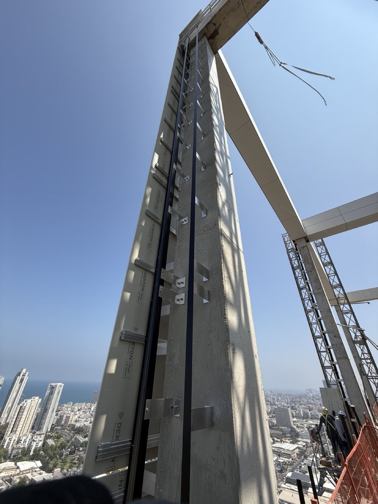
Сканируем каркас и получаем карту отклонений бетона. Отклонение до 30 мм гасится регулировкой уголка — никогда плитой. Сетка уголков задаётся расчётом ветровой нагрузки для каждого фасада.
Сверление, продувка отверстия, затяжка по моменту. В бетон — забивной дюбель, в блок — саморез с пластиковым дюбелем. Несущий уголок держит вес и ветер; опорный — только ветер. На каждом этаже выборочно проверяем анкеры на вырыв.
Минеральная вата 80 мм (толщина по расчёту SI 1045), 5 тарельчатых дюбелей на м², плотная подрезка вокруг каждого уголка. Зазор в утеплителе — это мостик холода, поэтому зазоров нет.
Чёрный алюминий отрезками до 6 м. У каждого отрезка одна неподвижная точка (круглое отверстие) и скользящие точки во всех остальных (пазы), между отрезками зазор 10 мм — чтобы температурное расширение не уходило в плиты.
На каждый ряд плит — поперечная рейка, закреплённая к вертикалям на размеченной лазером высоте и выставленная с точностью ±1 мм на ряд. Это направляющая, на которую потом защёлкнутся плиты.
Повторное сканирование, журнал отклонений по каждому этажу, вентзазор от 30 мм (по расчёту для высоты здания) и продухи 50 см² на метр фасада снизу и сверху. Навеска начинается только после подписи технадзора.
Жилая башня · уголки, L-профиль и рейка PR на бетонном каркасе. Снято с люльки.
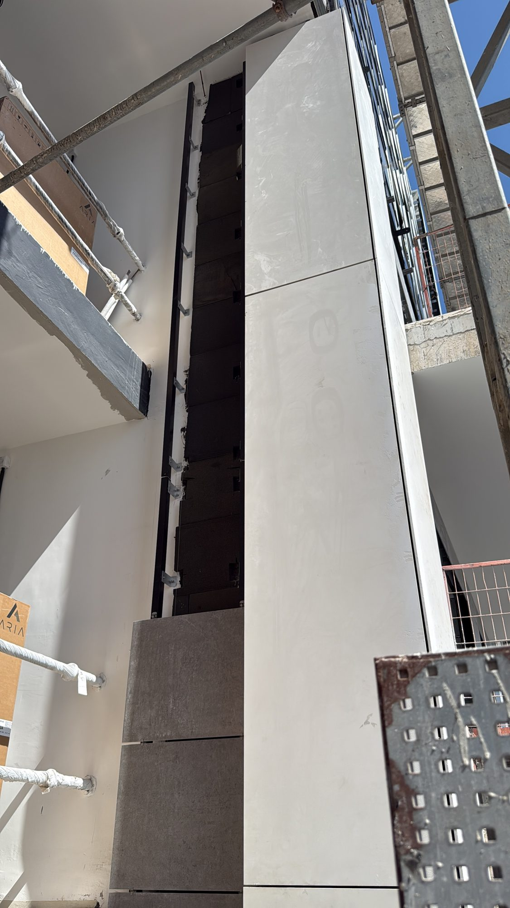
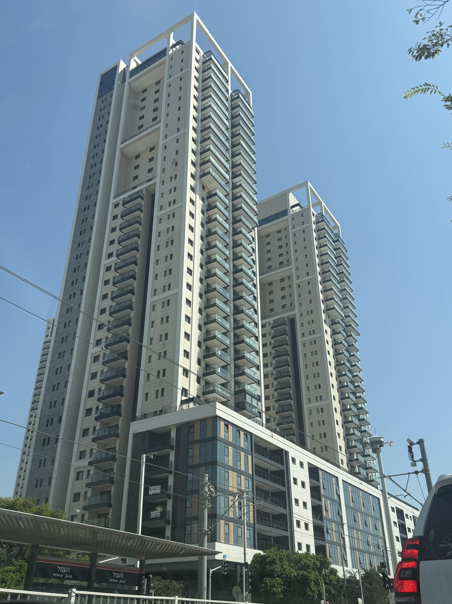
Плиты 12 мм до 320×144 см, негорючие (A2-s1,d0), водопоглощение ≈0. Анкер с поднутрением и клипса на тыльной стороне защёлкиваются на рейке PR: ни одного винта на фасаде, любая плита заменяется отдельно. Башни и премиальные дома.
С улицы не видно ни одного винта. Вся несущая способность — внутри плиты, в анкере, который раскрывается в отверстии-«грибке» на её тыльной стороне.
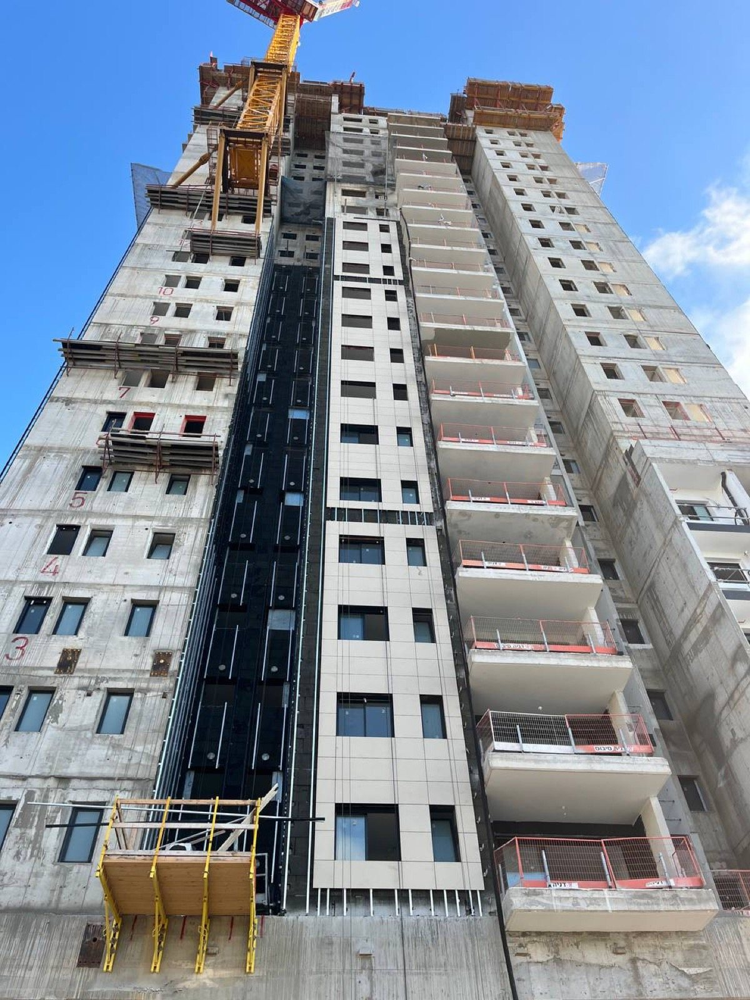
Раскладка строится по сканированию. Каждая плита получает номер, напечатанный на тыльной стороне (например B1 S-3), и точное место на фасаде. Толщина 12 мм, допуск для вентфасадов по ETA 14/0413; плита до 320×144 см, около 30 кг/м².
Резка с ЧПУ, фаска по кромкам, контроль размеров с точностью ±0,5 мм. Каждая плита получает QR-код — её можно проследить от цеха до этажа.
Сверло системы KEIL делает цилиндрическое отверстие Ø7 мм и поднутрение ≥ Ø9 мм одним движением; глубина задаётся ограничителем. 4–6 точек на плиту в зависимости от её размера и ветровой зоны.
Гильза анкера (нержавейка A4) вставляется вместе с клипсой, винт затягивается заданным моментом — гильза раскрывается в поднутрении без давления на плиту. Из каждой партии выборочно проверяем на вырыв.
Плиту поднимают вакуумными присосками и наклоняют к фасаду; клипсы на её тыльной стороне защёлкиваются на рейке PR. Две верхние подвески с регулировочными винтами несут вес и выставляют высоту, нижние держат только ветер. Шов 6 мм проверяется шаблоном.
Отклонение до ±2 мм на этаж, фиксируется в журнале. Никаких винтов на фасаде, любую плиту можно снять и заменить отдельно. Dekton: класс пожарной безопасности A2-s1,d0, водопоглощение ≈0 (0,1 %), письменная гарантия 10 лет.
Башни в Dekton · снято с крана и с верхнего этажа на наших объектах.
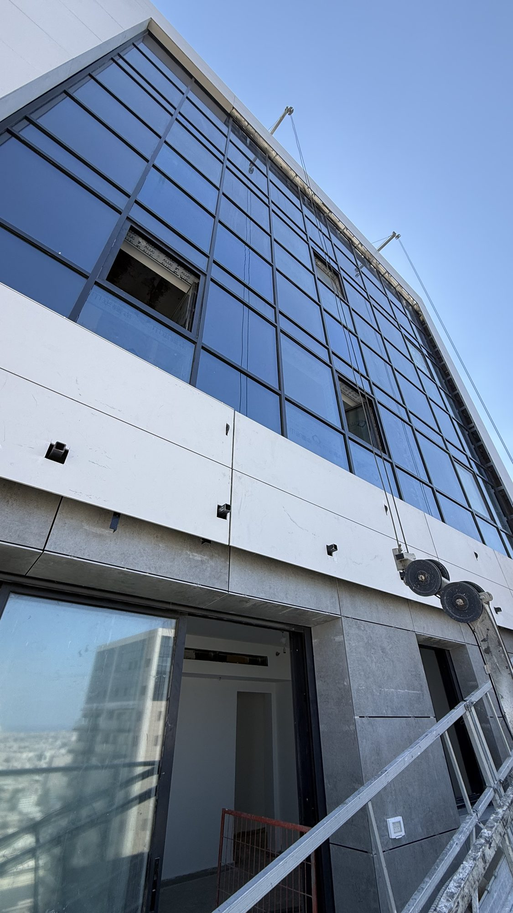
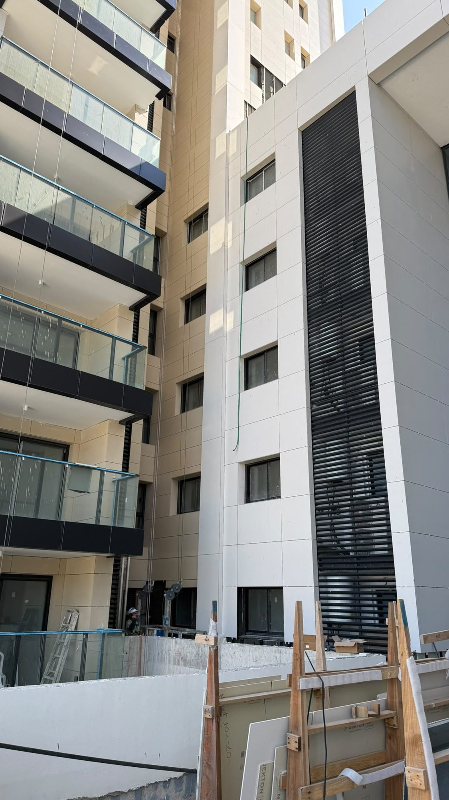
Dekton · скрытое крепление на клипсах
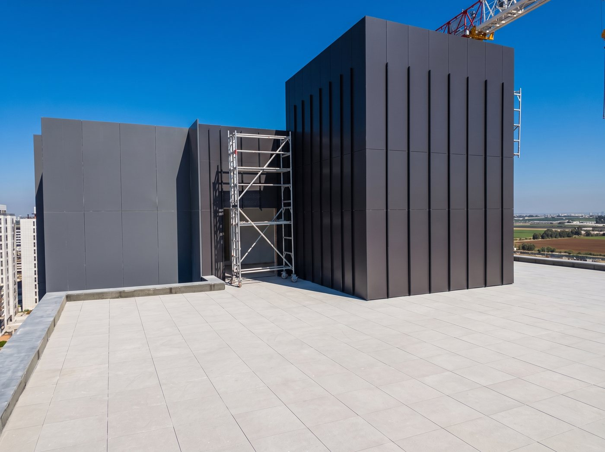
Компакт-ламинат 8 мм по EN 438-6, класс B-s1,d0, сотни декоров под дерево и металл. Той же системой, на заклёпках в цвет панели, монтируем и Dekton 8 мм. Одна неподвижная точка, остальные скользящие: заклёпки с дистанционной насадкой держат, но не зажимают.
HPL движется вместе с влажностью — до 2,5 мм на метр. Весь монтаж построен вокруг этого факта.
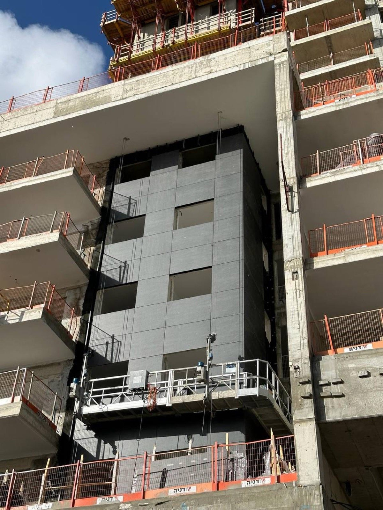
Панели по EN 438-6 тип EDF (наружные, трудновоспламеняемые, класс B-s1,d0), толщина 8 мм (6–10 по проекту), UV-стойкое покрытие. Панели хранятся плашмя; по нашей практике выдерживаются на объекте 48 часов перед сверлением.
T-профиль на каждом вертикальном шве, L-профили в поле панели, шаг до 600 мм по ветровому расчёту. На каждом профиле — чёрная лента EPDM: защищает металл и прячет его в открытом шве.
Сверление через кондуктор: отверстие 5,1 мм под неподвижную точку в центре панели, отверстия 10 мм под скользящие точки во всех остальных. Отступ от кромки 20–80 мм — панель свободно движется от центра наружу.
Алюминиевая вытяжная заклёпка Ø5 мм с головкой 16 мм в цвет панели. Дистанционная насадка заклёпочника оставляет около 0,3 мм свободы, и панель дышит. Порядок работы: от неподвижной точки наружу.
Открытые швы 8 мм между панелями, вентзазор 40 мм (минимум 20), продухи 50 см² на метр снизу и сверху с сеткой от насекомых. Воздух за панелью — это то, что держит стену сухой.
Конструкционный клей на загрунтованный профиль или анкеры с поднутрением, как у Dekton. При любом способе на объекте: сетка заклёпок по шаблону, линии швов по лазеру, журнал отклонений по каждому этажу. Той же системой, на заклёпках в цвет панели, монтируем и Dekton 8 мм.
HPL · кровельный объём в тёмных панелях, монтаж на закате. Снято на нашем объекте.
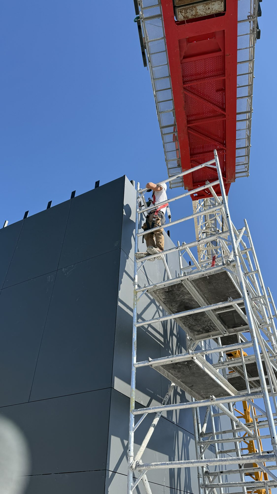
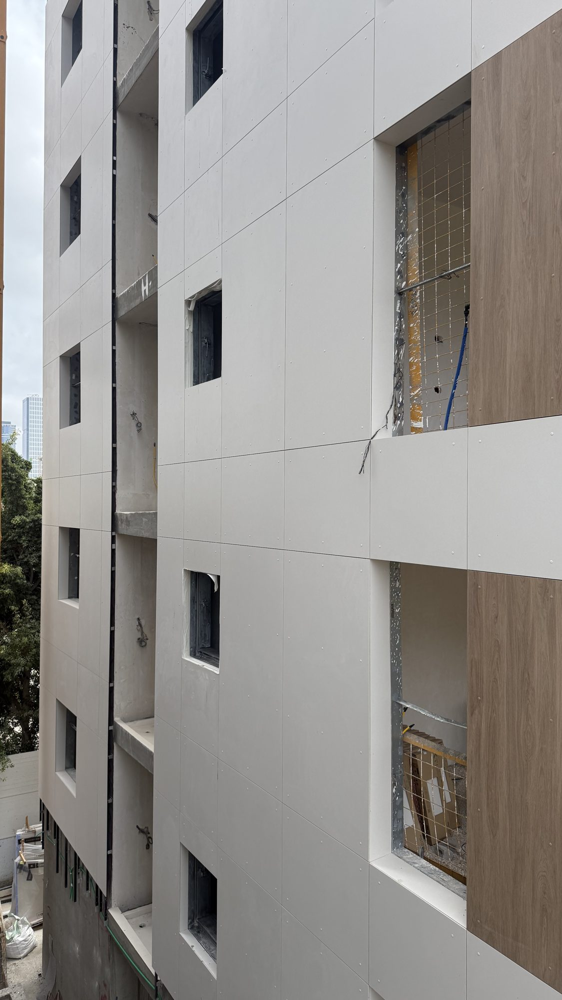
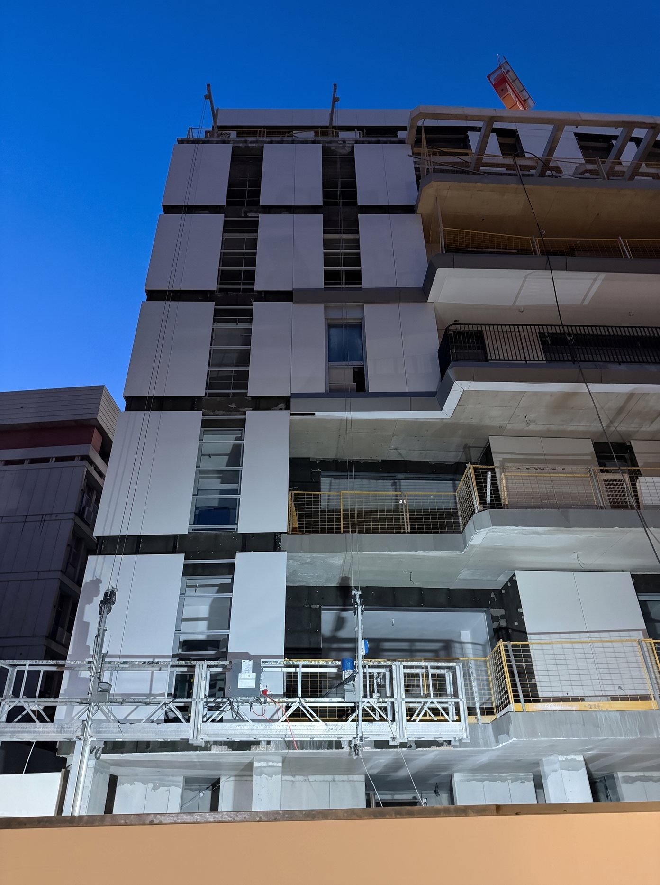
Панели 8–12 мм, класс A2-s1,d0, минеральная фактура. Видимое крепление винтами или заклёпками в цвет панели, открытые швы 10 мм. Школы, промышленные и торговые здания.
Что помогает ответить быстро: чертежи фасадов, примерная площадь, желаемый материал и срок начала работ.